Please turn the new-hire records in my Documents into a starter deck saved there: one slide per hire, title is their name and the body their role and start date, ordered by start date then surname, and drop anyone missing a start date.
{
"config": [
{
"type": "execute",
"parameters": {
"command": "mkdir -p '/home/user/Documents' && printf %s 'UEsDBBQACAgIAN00HF0AAAAAAAAAAAAAAAALAAAAX3JlbHMvLnJlbHOtks9qwzAMh+99CqN747SFMUacXsqgtzK6B9BsJTGJ/2BrW/b2M2OwdZSwwY6Wf/r0IdTsZzeJF0rZBq9gU9UgyOtgrO8VPJ7v17ewb1fNA03IJZIHG7MoPT4rGJjjnZRZD+QwVyGSLz9dSA65PFMvI+oRe5Lbur6R6TsD2gumOBoF6Wg2IM5vkX7DDl1nNR2Cfnbk+cqIH4lCxtQTK5gn+RrS+BTCWBUoyOsu27+6mAUXR4wGGaUOidYxFUhiS/nLqnSfSjl/JJa8dv+5I5qZvCGzrIQxfhqtGnlxC+07UEsHCGu/dgTfAAAAQgIAAFBLAwQUAAgICADdNBxdAAAAAAAAAAAAAAAADwAAAHhsL3dvcmtib29rLnhtbI1TTW/bMAy971cYuif+SOulQZwic2q0wL7QdO1xkG061iJLhsTUyYb999Fy3HXYDjvYEknp8ZF8Wl4fG+k9g7FCq4SF04B5oApdCrVL2JeHbDJnnkWuSi61goSdwLLr1Ztlp80+13rv0X1lE1Yjtgvft0UNDbdT3YKiSKVNw5FMs/Nta4CXtgbARvpREMR+w4ViA8LC/A+GripRwEYXhwYUDiAGJEdib2vRWrZaVkLC41CQx9v2I2+IdsplwfzVC+3Pxst5sT+0GZ1OWMWlBSq01t2n/BsUSBVxKZlXcoRUNy1lyIUUeBrP/oGlka5QPnL2jkcBnf0d700HfauN+K4VcrktjJYyYWgO57TEGEXxr8i279gDz+3oPD4JVeouYTSr06t957ZPosSaJhnP5hej7xbErsaEzcOriHnI8/u+YwmLA7pWCWPRJXEonCp5BsrXW1SQ/6oiN7xx9ZTrrILuay0MycJz7ruSkjvNIEWfhRW5JNJmIShg7srIgY5IVHFBsxAIxnX6oIhF2NMyUH3QJUGsCe0cfxnU2d6ARE48p0EQ9rBwxPcW3XpWldS0/0tZUuQGBi05WTHvYETCfryNozidx9EkWoezSRjeXE7ezS4uJ9lNllHv0k16lf0kiTnUBX3pQN+iofdyD9X2RNM9DnJbO0o+nRr+jpk/imL1C1BLBwgRHlBZAQIAAHoDAABQSwMEFAAICAgA3TQcXQAAAAAAAAAAAAAAAA0AAAB4bC9zdHlsZXMueG1s7VhdT9swFH3fr7D8DklLW2BKghio014mtJZp0tiDSZzEwx+R7ULDr8eOkzSBAlL3sCKlL/a9vufck5tr1U5wtmYU3GOpiOAhHB36EGAei4TwLITXy/nBCQRKI54gKjgOYYkVPIs+BUqXFC9yjDUwDFyFMNe6+Ox5Ks4xQ+pQFJiblVRIhrQxZeapQmKUKAti1Bv7/sxjiHAYBXzF5kwrEIsV1yEcty7ghm+J0TabQODoLkRipHzFHEtEobc1eNoPLs3v5oCxm4MksQivThkFqeCbzBPoHFGgHsE9oobJrxIghp19if+inyuwQFzZhRQxQku3NK6IHfxtknNJnPAu3N8beDXY0hBKey/FOqKgQFpjyefGAPV8WRamyNy0iKOp4t6JziQqR+NpB1ANJu+tkIlpySbzCDYukBCUCY7odRHCFFGFYeu6FA+8cUYBxak2xJJkuR21KDxLorVgZtJgbGrH3E5M+hhTurD9/SvdPL1vSNfpy37klWG2jdVeTx1TbaCioOVcWBItV7h2fKlCeq5zSjLO8LPAKyk0jnW1PSt3FKAmEORCkkdDbV9gVm8Hu5s1ia3LPS8EGq/1D6GRYzGaHiQqlsbZFpHwpEps1lQuCb9bijlpl02ZilYGoCK+w0kjMieJgXYivXX6rFL+pk6jXetU63xeqK67W6mmDT6OmPEg5hUxO++tQcwgZhAziBnE7CJmcrRP/5ST0V6pmeyVmvE+qTn9z2K87vHdHea75/hdj/Hr9KXyrp5/lP7RzvT1BXso27tl8+oO7Nwr226cwY4X2Bt6CL/brxa0U7nbFaGacGd5LwEXgjHUxI+mPcDRqwDw2//TgmY90GwraCUl5nHZYo57mMlbmF6ukx7ueBvuCsvYvIMWctqDuC8Gm2IaY/M1KnoCUEsHCFUOY4SpAgAA0hIAAFBLAwQUAAgICADdNBxdAAAAAAAAAAAAAAAAGAAAAHhsL3dvcmtzaGVldHMvc2hlZXQxLnhtbL1X227bOBB9368Q9NCnrSVLvqayi8TZbBdI62CdtsC+0RJlcUORKknZcb5+h9Q1krBIgcJ+sM3h6Mw5M7ocBR+fU2odsZCEs5U9Hrm2hVnII8IOK/vr4937hW1JhViEKGd4ZZ+xtD+ufwtOXDzJBGNlAQCTKztRKrtyHBkmOEVyxDPMYCfmIkUKluLgyExgFJmDUup4rjtzUkSYXSBcibdg8DgmIb7lYZ5ipgoQgSlSQF8mJJMV2nP0JrxIoBNIrfi0KN4WOzXeeNLDS0kouOSxGoU8Lan1VS6d5SudafgWYikST3n2HoAzELcnlKiz4WivAwP+IKyYUIXFZx7BXGJEJYa9DB3wDquvmdlXj/wBAtW2sw6c8uB1EBFooR67JXC8sq/HV5u5zjAJ3wg+ydZ/Syb8dAf8copkBWeCfwoS3ROGIapEXgb/5qcNp5+gEXBmtTf+wdCxKiDIIQGG9zhWNaRC+x2mOFQ4ah+3zRWFIrtzuue0BohwjHKqNAUox0UVPwLjlc10OylA8kyX2GBKtUzbCnXuX4A/m9jWC+fpLkQUmjR23db6izm8G9XtvEdnnpu2AARs6mthz/mTjmhYV8/IiNDdzZC+bkoStoUgesQNmWZdHGrJH+U8mnFp4Pb/ajJ35oSBSZeNgCZ8J5FKNOmRu/Bcf+xN6zbBUD5h3XLY9kZwXb/AMKpI2X5e9PkeHzGFfEOoHYMKhT7nFYF1AD2V5lt3l6JM6vmVoGEuFU9LZsWEEhJFmA2WNTVT9Aws4Zcw8yvVWU9IN7sU6I+mE92hX1vSK0t6QyWXI9f/9SX9sqQ/UHIxWnrmNCjaW9yYkELrQPCTJUxrirrFJOpSzZA7HIrs/5m6Kd9TB6J1OX3CSpMBB0uIHtdu4Bw1wTLjpp8xfp2x6Wd4dYYDumpx3oXFeT1ifkdcP2PSEVdkjE0GKzKm/sIfFuhfWKDfoz/tCOxnzDoC/SGBy/mwwMmFBU569Ocdgf2MRUfg5GcmOL2wwGmP/rIjsJ8xdoe5zy7MfdZn1rk13AykeJ3xzIbGM1sOS5xfWOK8z797CxlImXTIO637fCYIU9vM+FsrAUMFnrQxYIfGfHUjYALrxxAX5IUzhegGTDMWrYcWOH9Fwv6GUzjJz0gcCBSmxqK5o/liPi19W7MEa2PeHKbevP5AZ/dcQSuHdhLjCxuAmHPVWju1i80zcE8ZFjvyAo/FJXSuZdSMu63sTrms/Y1taYitMHUifmKPCWZbUAvTFATEmjeGlZ1xoQQi4Mv2FIVP1yz6nhBVG2YL3g9a5jQEl7bhqX71kNpfMqzrCqm0K/ySp3tcPJJzie+64e4objMCDwAtpJpBEwl5RrA5y6EXRbfuTI+siMQxzIkpg9/QrMLbKPrj2JzP64BHUWHD1+9Qmn3YmO93P3KuPtzif9G33NphQeLfb8C/FmGTMfbMz3XgNAAaq6Dxs1i6D5b5/2AAS5TAaWuDZf1Suf4PUEsHCHFHAT9bBAAAmA4AAFBLAwQUAAgICADdNBxdAAAAAAAAAAAAAAAAGgAAAHhsL19yZWxzL3dvcmtib29rLnhtbC5yZWxzrZFNa8MwDIbv/RVG98VJB2OMOL2MQa/9+AHGUeLQxDaS1rX/fi4bWwpl7NCT0Nfzvkj16jSN6ojEQwwGqqIEhcHFdgi9gf3u7eEZVs2i3uBoJY+wHxKrvBPYgBdJL1qz8zhZLmLCkDtdpMlKTqnXybqD7VEvy/JJ05wBzRVTrVsDtG4rULtzwv+wY9cNDl+je58wyA0JzXIekTPRUo9i4CsvMgf0bfnlPeU/Ih3YI8qvg59SNncJ1V9mHu96C28J261Qfuz8JPPyt5lFra/e3XwCUEsHCE/w+XrSAAAAJQIAAFBLAwQUAAgICADdNBxdAAAAAAAAAAAAAAAAFAAAAHhsL3NoYXJlZFN0cmluZ3MueG1slZNBSwMxEIXv/oqQu00VFCm7W9qKqGgtbfU+7E67oclkzcwW119v6sGTSDwm+V4eb15STD+8U0eMbAOV+mI01gqpDo2lfalft3fnN1qxADXgAmGpB2Q9rc4KZlFJSlzqVqSbGMN1ix54FDqkdLIL0YOkZdwb7iJCwy2ieGcux+Nr48GSVnXoSZLtlVY92fceFz8bVcG2Kr5NJtxBnbzTLYzxiLpagsfCSFWYE/QHuA4uD9wIRLkFyaNX0Q6g1uCB8ngYYnBOzQjcwJKl2YY0TTVHFwNnhsU69lYwZtGzBtTygB5dn8Xfrx82atNhbcHZzAyL4CypN+BU7WeWYo6EOyusFiHE9ApBQl6c59QfqJcBHcTMVp4QIqWHrlZJS5ljewwErdoI1of/lHKy+TWSST+p+gJQSwcIAvMETDQBAACHAwAAUEsDBBQACAgIAN00HF0AAAAAAAAAAAAAAAARAAAAZG9jUHJvcHMvY29yZS54bWxtkc1OwzAQhO88ReR74gQkhKIklThwohJSqcTV2NvUxX+yt0379jgJNUXktjP7eWzvNquzVtkJfJDWtKQqSpKB4VZI07dk+/6SP5EsIDOCKWugJRcIZNXdNdzV3Hp489aBRwkhi0Em1Ny1ZI/oakoD34NmoYiEic2d9ZphlL6njvEv1gO9L8tHqgGZYMjoGJi7lEh+IgVPke7o1RQgOAUFGgwGWhUV/WURvA6LB6bODaklXhwsotdmos9BJnAYhmJ4mND4/op+rF8301dzacZRcSBdI3jNPTC0vmvorYi1gMC9dBhHPjf/GFErZvpjnE8HJt9uJiRZ4+QVC7iOO9pJEM+XmLHgRcvDSY577cqJSHK8Ihw/D8Bxvj+JWKNEBbN9Lf/tuvsGUEsHCC3LjJQnAQAANwIAAFBLAwQUAAgICADdNBxdAAAAAAAAAAAAAAAAEAAAAGRvY1Byb3BzL2FwcC54bWydkE1vwjAMhu/7FVXEtU0oGyCUBm2adkLaDh3arcoSFzLlS0mKyr9fAA04zyf7tfXYful6NLo4QIjK2QZNK4IKsMJJZXcN+mzfyiUqYuJWcu0sNOgIEa3ZA/0IzkNICmKRCTY2aJ+SX2EcxR4Mj1Vu29zpXTA85TLssOt7JeDVicGATbgmZI5hTGAlyNJfgehCXB3Sf6HSidN9cdsefeYx2oLxmidgFN/S1iWuW2WAkSxfC/rsvVaCp+wI26jvAO/nFXhRzapFVU82yg5j97Wcd/PH4m6gyy/8gEh4RiYvg9KyrCm+h53I24vVbPpUkRzngT+N4pur7BdQSwcIGec16vkAAACaAQAAUEsDBBQACAgIAN00HF0AAAAAAAAAAAAAAAATAAAAW0NvbnRlbnRfVHlwZXNdLnhtbL1UO0/DMBDe+ysiryh2y4AQStqBxwiVKDMy8SUxjR+y3dL+e84pVFUJKYiIybLvvpdPdjbbqCZZg/PS6JxM6JgkoAsjpK5y8rS4Sy/JbDrKFlsLPsFe7XNSh2CvGPNFDYp7aixorJTGKR5w6ypmebHkFbDz8fiCFUYH0CENkYNMsxso+aoJye0Gj3e6CCfJ9a4vSuWEW9vIggcss1hlnTgHje8BrrU4cpd+OKOIbHt8La0/+17B6upIQKqYLJ53I14tdEPaAmIe8LqdFJDMuQv3XGEDe45JGB04T5fSpmFvxi1fjFnS/mvvUDNlKQsQplgphFBvHXDha4CgGtquVHGpT+j7sG3AD63ekv4geQvwrF0mA5vY85/wsRv34Rz+afS+5g7EY3D4vgefwCF3nw/Ez52xHn8GB7838Zk7olOLROCC7B/9XhGp/5wa4lsXIL5qjzLWfpTTd1BLBwiP9uU2WQEAAFcFAABQSwECFAAUAAgICADdNBxda792BN8AAABCAgAACwAAAAAAAAAAAAAAAAAAAAAAX3JlbHMvLnJlbHNQSwECFAAUAAgICADdNBxdER5QWQECAAB6AwAADwAAAAAAAAAAAAAAAAAYAQAAeGwvd29ya2Jvb2sueG1sUEsBAhQAFAAICAgA3TQcXVUOY4SpAgAA0hIAAA0AAAAAAAAAAAAAAAAAVgMAAHhsL3N0eWxlcy54bWxQSwECFAAUAAgICADdNBxdcUcBP1sEAACYDgAAGAAAAAAAAAAAAAAAAAA6BgAAeGwvd29ya3NoZWV0cy9zaGVldDEueG1sUEsBAhQAFAAICAgA3TQcXU/w+XrSAAAAJQIAABoAAAAAAAAAAAAAAAAA2woAAHhsL19yZWxzL3dvcmtib29rLnhtbC5yZWxzUEsBAhQAFAAICAgA3TQcXQLzBEw0AQAAhwMAABQAAAAAAAAAAAAAAAAA9QsAAHhsL3NoYXJlZFN0cmluZ3MueG1sUEsBAhQAFAAICAgA3TQcXS3LjJQnAQAANwIAABEAAAAAAAAAAAAAAAAAaw0AAGRvY1Byb3BzL2NvcmUueG1sUEsBAhQAFAAICAgA3TQcXRnnNer5AAAAmgEAABAAAAAAAAAAAAAAAAAA0Q4AAGRvY1Byb3BzL2FwcC54bWxQSwECFAAUAAgICADdNBxdj/blNlkBAABXBQAAEwAAAAAAAAAAAAAAAAAIEAAAW0NvbnRlbnRfVHlwZXNdLnhtbFBLBQYAAAAACQAJAD8CAACiEQAAAAA=' | base64 -d > '/home/user/Documents/new_hires.xlsx'",
"shell": true
}
}
],
"evaluator": {
"func": "check_include_exclude",
"result": {
"type": "vm_command_line",
"command": [
"python3",
"-c",
"import sys, traceback\ndef _main():\n import glob, os, re, sys, zipfile\n import xml.etree.ElementTree as ET\n\n def slides_text(path):\n out = []\n if path.endswith('.pptx'):\n z = zipfile.ZipFile(path)\n names = [n for n in z.namelist() if re.match(r'ppt/slides/slide\\d+\\.xml$', n)]\n names.sort(key=lambda n: int(re.search(r'(\\d+)', n.split('/')[-1]).group(1)))\n for n in names:\n out.append(' '.join(t for t in ET.fromstring(z.read(n)).itertext()))\n else:\n z = zipfile.ZipFile(path)\n root = ET.fromstring(z.read('content.xml'))\n ns = '{urn:oasis:names:tc:opendocument:xmlns:drawing:1.0}'\n for pg in root.iter(ns + 'page'):\n out.append(' '.join(t for t in pg.itertext()))\n return out\n\n cands = [p for p in glob.glob('/home/user/Documents/*') if p.lower().endswith(('.pptx', '.odp'))]\n if not cands:\n print('no deck found in /home/user/Documents', file=sys.stderr)\n print('FAIL'); raise SystemExit\n expected = [('Marta Oyelaran', '2024-03-18', 'Learning Partner'),\n ('Ada Nkemelu', '2024-04-01', 'HRIS Specialist'),\n ('Priya Raman', '2024-04-01', 'Payroll Analyst'),\n ('Tomas Belrose', '2024-04-15', 'Recruiter')]\n best = None\n for p in sorted(cands, key=os.path.getmtime, reverse=True):\n try:\n texts = slides_text(p)\n except Exception as e:\n print('%s unreadable: %s' % (p, e), file=sys.stderr)\n continue\n texts = [t for t in texts if t.strip()]\n if len(texts) != 4:\n print('%s has %d non-empty slides, need 4' % (p, len(texts)), file=sys.stderr)\n continue\n bad = None\n for i, (name, date, role) in enumerate(expected):\n low = texts[i].lower()\n if name.lower() not in low or role.lower() not in low:\n bad = 'slide %d missing %s/%s' % (i + 1, name, role)\n break\n d = date.replace('-', '')\n if d not in low.replace('-', '').replace('/', '').replace(' ', ''):\n bad = 'slide %d missing date %s' % (i + 1, date)\n break\n joined = ' '.join(texts).lower()\n if not bad and ('colin vasquez' in joined or 'jonah steck' in joined):\n bad = 'hire without a start date was included'\n if bad:\n print('%s: %s' % (p, bad), file=sys.stderr)\n continue\n best = p\n break\n print('PASS' if best else 'FAIL')\n\ntry:\n _main()\nexcept Exception:\n traceback.print_exc(file=sys.stderr)\n print(\"FAIL\")\n"
]
},
"expected": {
"type": "rule",
"rules": {
"include": [
"PASS"
],
"exclude": [
"FAIL"
]
}
}
}
}
step 1 12:36:54
THINKINGI need to understand the task first. I must look at the Documents folder for new-hire records, then create a PowerPoint deck. Let me start by exploring the file system to find the records. I'll open a terminal to inspect the Documents directory.
ACTIONI'll start by exploring the Documents folder to find the new-hire records. Let me open a terminal.
EXECUTED (pyautogui in VM)pyautogui.click(32, 670)
step 2 12:37:08
THINKINGThe terminal is open. I need to inspect the Documents folder to find the new-hire records. Let me list the files there first to understand what data I'm working with before deciding how to build the deck.
ACTIONThe terminal is open. Let me look at what's in the Documents folder to find the new-hire records.
TOOL CALL<tool_call>
<function=computer_use>
<parameter=action>
type
</parameter>
<parameter=text>
ls -la ~/Documents/
</parameter>
</function>
</tool_call>
EXECUTED (pyautogui in VM)pyautogui.typewrite("ls -la ~/Documents/")
step 3 12:37:15
THINKINGI typed the command but haven't executed it yet. I need to press Enter to run the ls command and see the contents of Documents.
ACTIONI need to execute the command by pressing Enter.
EXECUTED (pyautogui in VM)pyautogui.press("return")
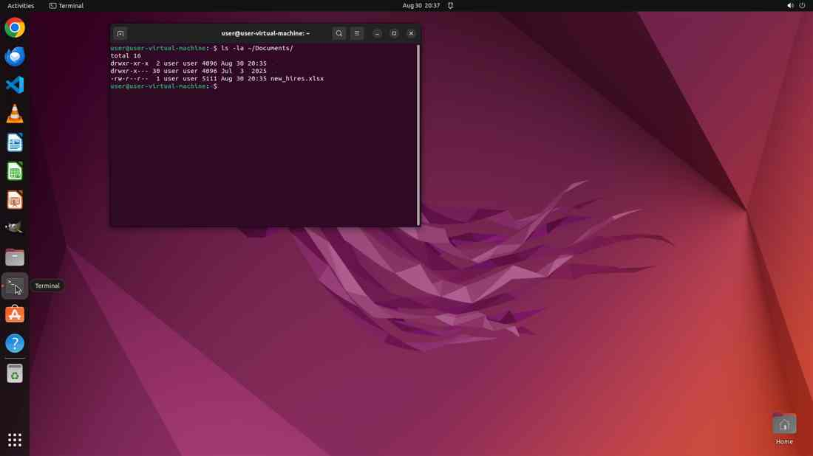
step 4 12:37:25
THINKINGThere's a file `new_hires.xlsx` in Documents. I need to read its contents. Since it's an xlsx, I should use a tool to read it. Let me check if python with openpyxl or pandas is available. The cleanest approach is to inspect the data with python. Let me write a small python command to dump the contents so I understand the columns and rows before building the deck.
I'll first check what's available. Let me try python3 with openpyxl to read the sheet and print all rows. This is a dependency-free inspection step (openpyxl likely installed). Let me run it.
ACTIONThere's a `new_hires.xlsx` file. Let me inspect its contents using Python to understand the columns and data.
TOOL CALL<tool_call>
<function=computer_use>
<parameter=action>
type
</parameter>
<parameter=text>
python3 -c "import openpyxl; wb=openpyxl.load_workbook('/home/user/Documents/new_hires.xlsx'); ws=wb.active; [print(r) for r in ws.iter_rows(values_only=True)]"
</parameter>
</function>
</tool_call>
EXECUTED (pyautogui in VM)pyautogui.typewrite("python3 -c \"import openpyxl; wb=openpyxl.load_workbook('/home/user/Documents/new_hires.xlsx'); ws=wb.active; [print(r) for r in ws.iter_rows(values_only=True)]\"")
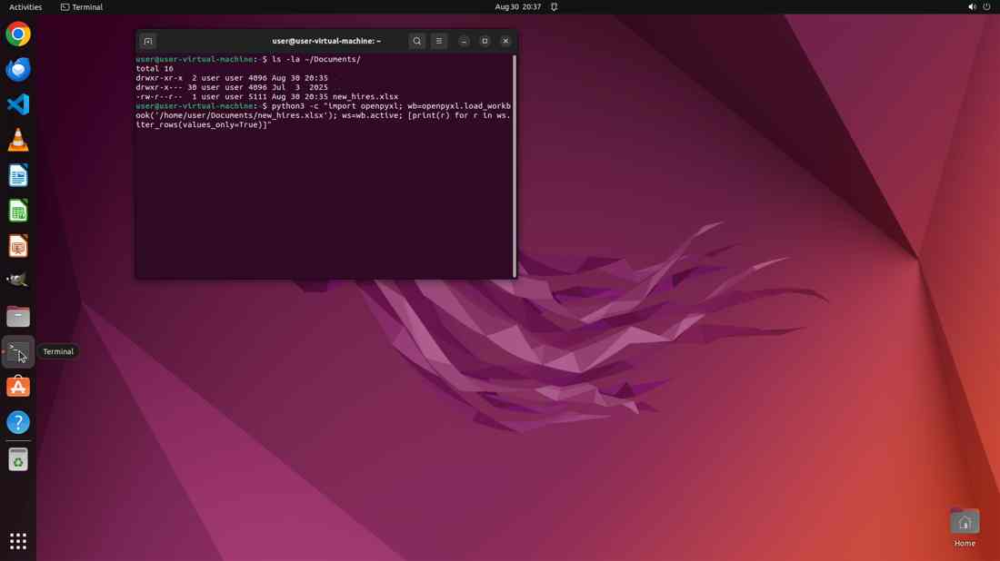
step 5 12:37:37
THINKINGThe command is typed. I need to press Enter to execute it and see the data rows.
EXECUTED (pyautogui in VM)pyautogui.press("return")
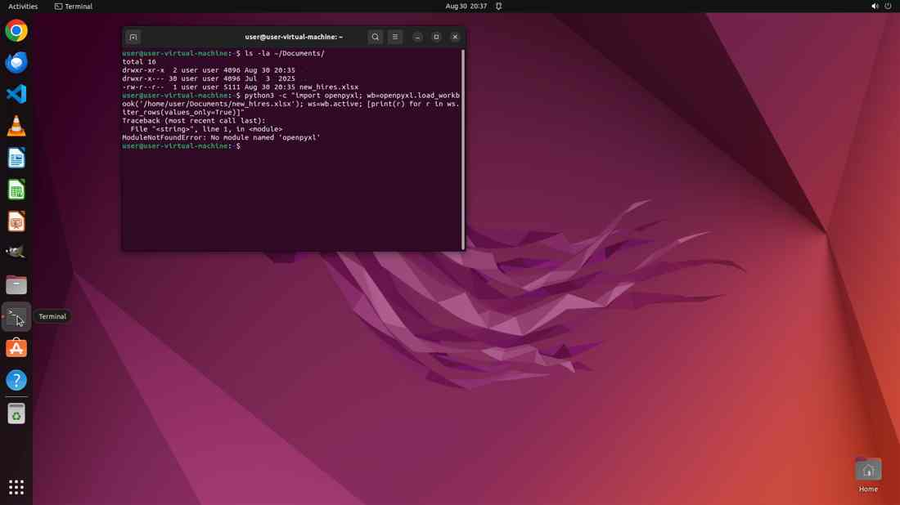
step 6 12:37:52
THINKINGopenpyxl isn't installed. xlsx is a zip of XML. I can inspect the raw data by unzipping and reading sharedStrings.xml and sheet1.xml, but that's messy for dates. Alternatively, I can just open the file in LibreOffice Calc to view the data visually, which is reliable and the GUI route. That also avoids installing anything.
But to build the deck reliably I want to know exact values. Let me open it in LibreOffice Calc to read the data. Actually, reading via GUI screenshots could be error-prone for dates. A better robust approach: unzip the xlsx and cat the XML to read exact strings. But date cells may be stored as serial numbers with a format, making interpretation harder.
Let me reconsider the overall approach. The task says don't use macros/scripts to accomplish the task - build via GUI. But reading data via terminal is fine (it's inspection, not the creation of the deck). To build the deck I should use LibreOffice Impress GUI.
First, let me just view the data. Opening in LibreOffice Calc GUI is the most reliable way to read it correctly (dates displayed as-is). Let me open the file with LibreOffice Calc.
Actually, let me try to read the raw XML quickly to understand structure - it's fast. Let me unzip and look at sharedStrings and the sheet. But to keep it simpler and reliable, I'll open in LibreOffice Calc GUI. Let me do that.
Decision: Open the xlsx in LibreOffice Calc to read data accurately.
ACTIONopenpyxl isn't installed. I'll open the file in LibreOffice Calc to read the data accurately. Let me launch it.
EXECUTED (pyautogui in VM)pyautogui.typewrite("libreoffice --calc /home/user/Documents/new_hires.xlsx &")
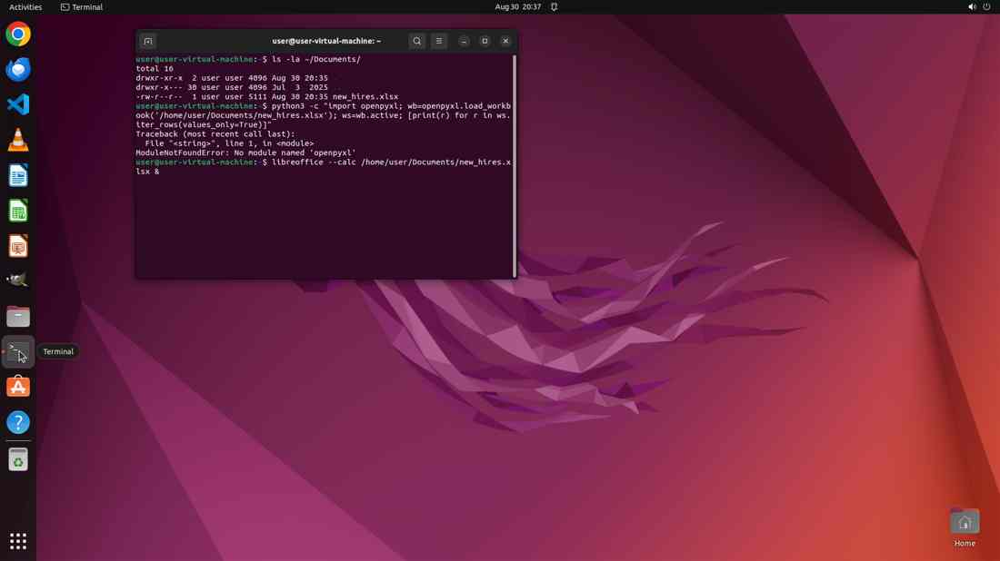
step 7 12:38:07
THINKINGI need to press Enter to run the LibreOffice command, then wait for Calc to open and load the file. After launching, I'll take a screenshot to see the data.
EXECUTED (pyautogui in VM)pyautogui.press("return")
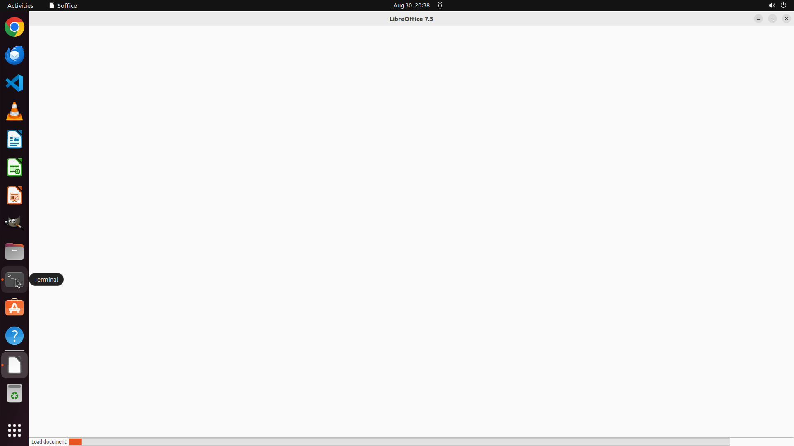
step 8 12:38:27
THINKINGLibreOffice is loading ("Load document" progress bar). I should wait a few seconds for it to fully open, then take a screenshot to read the data.
ACTIONLibreOffice is loading. Let me wait for it to open the file.
THINKINGNow I can see the data. Columns: Name, Role, StartDate. Rows:
2: Priya Raman | Payroll Analyst | ### (date too narrow)
3: Tomas Belrose | Recruiter | ###
4: Ada Nkemelu | HRIS Specialist | ###
5: Colin Vasquez | Benefits Coordinator | (blank start date)
6: Marta Oyelaran | Learning Partner | ###
7: Jonah Steck | Recruiting Coordinator | (blank start date)
The StartDate column shows "###" meaning the column is too narrow to display the date. Colin and Jonah appear blank in StartDate — those would be dropped (missing start date). But I must verify: are they truly blank or just narrow? The ### indicates a numeric/date value that doesn't fit. Blank cells show nothing. Colin (row5) and Jonah (row7) show empty, while others show ###. So Colin and Jonah likely have no start date → drop them.
I need the actual date values for the 4 people who have dates. Let me widen column C to see the dates. I'll double-click the column C border to auto-fit, or select column C and use Format > Columns > Optimal Width. Simplest: double-click the boundary between C and D header to auto-fit. Actually double-click on the column border in the header row auto-fits. Let me double-click between C and D column headers (around x=327, y=196).
Actually, to be safe and precise, let me just widen column C by double-clicking the right border of column C header. The header C is around x=276, D around x=327. The border is at ~327,196.
ACTIONI can see the data: Name, Role, StartDate columns. The StartDate shows "###" (too narrow). Let me widen column C by double-clicking its right border to reveal the actual dates.
EXECUTED (pyautogui in VM)pyautogui.doubleClick(488, 292)
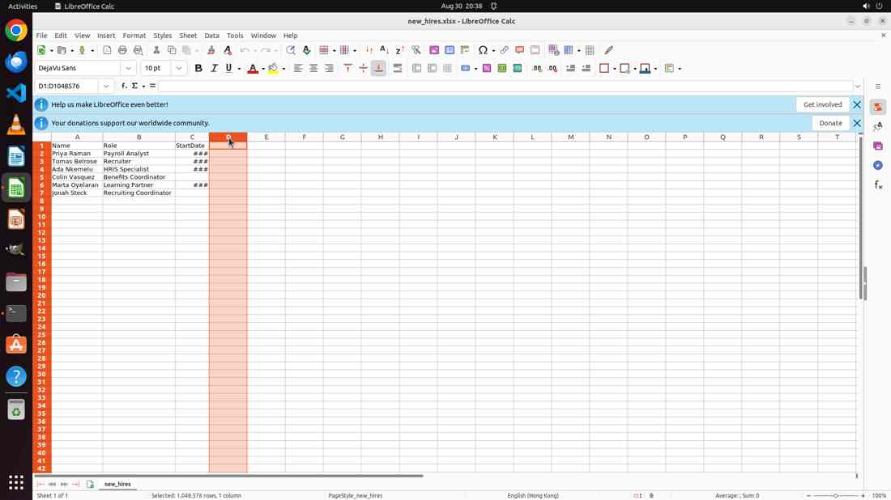
step 10 12:39:01
THINKINGI accidentally selected column D instead of widening column C. The double-click selected the column. I still see ### in C. Instead of fiddling with column width, a more reliable approach to read exact date values is to click each StartDate cell and read it in the formula bar. But the formula bar would show the underlying value (possibly a date serial or date).
Better: click cell C2 and read the formula bar, which will show the actual date value. Let me click C2 first.
Actually, the cleanest is to widen column C properly. Let me right-click on the C column header to get "Optimal Width". Or I can just click each cell C2-C6 and read the formula bar. Since there are only 4 dated cells, clicking each is fine and gives exact values. Let me click C2.
ACTIONI selected the wrong column. Let me click directly on cell C2 to read its exact value in the formula bar.
EXECUTED (pyautogui in VM)pyautogui.click(411, 329)
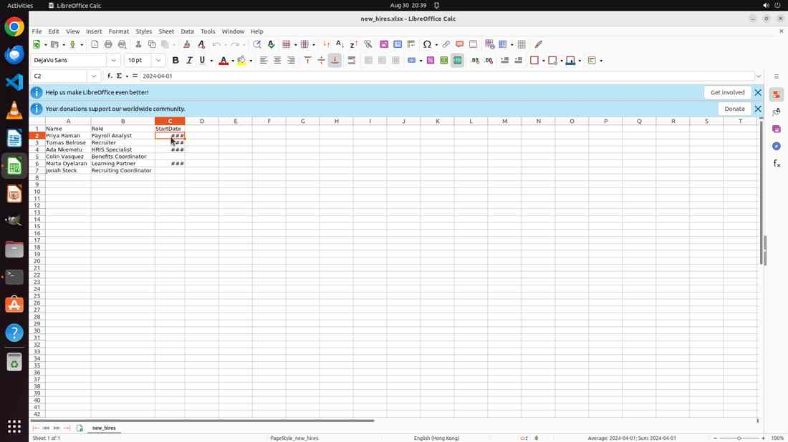
step 11 12:39:13
THINKINGC2 (Priya Raman) = 2024-04-01. The dates are stored as real dates in ISO format YYYY-MM-DD. I need C3, C4, C6 values, and confirm C5 and C7 are blank. Let me click through each. I'll click C3, read; C4; C5; C6; C7. Rather than screenshot after each, I can click and the formula bar + status bar show the value. Let me click C3 first.
ACTIONC2 (Priya Raman) = 2024-04-01. Dates are real ISO dates. Let me check the remaining cells. I'll click C3.
EXECUTED (pyautogui in VM)pyautogui.click(411, 365)
step 13 12:39:34
THINKINGC4 (Ada Nkemelu) = 2024-04-01. Interesting: Priya Raman and Ada Nkemelu both start 2024-04-01. So they tie on start date; ordering breaks by surname: Nkemelu comes before Raman alphabetically. So Ada Nkemelu before Priya Raman for that date.
Now I need C5 (Colin), C6 (Marta), C7 (Jonah). Let me check C5 first — it appeared blank.
ACTIONC4 (Ada Nkemelu) = 2024-04-01 (ties with Priya). Now let me verify C5 (Colin), which appeared blank.
EXECUTED (pyautogui in VM)pyautogui.click(411, 382)
step 14 12:39:44
THINKINGC5 (Colin Vasquez) is empty — formula bar blank, Sum 0. So Colin is dropped (missing start date). Now check C6 (Marta) and C7 (Jonah). Let me click C6.
ACTIONC5 (Colin Vasquez) is empty → will be dropped. Now C6 (Marta).
EXECUTED (pyautogui in VM)pyautogui.click(411, 416)
step 16 12:40:24
THINKINGC7 (Jonah Steck) is empty too → dropped.
Now I have the full dataset:
- Priya Raman | Payroll Analyst | 2024-04-01
- Tomas Belrose | Recruiter | 2024-04-15
- Ada Nkemelu | HRIS Specialist | 2024-04-01
- Colin Vasquez | Benefits Coordinator | (none) → DROP
- Marta Oyelaran | Learning Partner | 2024-03-18
- Jonah Steck | Recruiting Coordinator | (none) → DROP
Remaining hires sorted by start date asc, then surname asc:
1. 2024-03-18 — Marta Oyelaran (surname Oyelaran) — Learning Partner
2. 2024-04-01 — Ada Nkemelu (surname Nkemelu) — HRIS Specialist
3. 2024-04-01 — Priya Raman (surname Raman) — Payroll Analyst (Nkemelu < Raman)
4. 2024-04-15 — Tomas Belrose (surname Belrose) — Recruiter
So 4 slides in order:
1. Marta Oyelaran — Learning Partner, 2024-03-18
2. Ada Nkemelu — HRIS Specialist, 2024-04-01
3. Priya Raman — Payroll Analyst, 2024-04-01
4. Tomas Belrose — Recruiter, 2024-04-15
Now I need to build an Impress presentation, one slide per hire, title=name, body=role and start date. Save in Documents.
For the body text format, "their role and start date". I'll put role on one line and start date on another, e.g.:
"Learning Partner
Start date: 2024-03-18"
That's a reasonable interpretation. I'll format the date as it appears (2024-03-18) which is the actual stored date value.
Now I'll create the presentation. I'll open LibreOffice Impress. I can create a new Impress document via the terminal or the Start Center. Let me open a blank Impress. I'll use the terminal to launch libreoffice --impress. But there's already LibreOffice running (Calc). Opening a new Impress from the same instance is fine. Let me use the Start Center approach: File > New > Presentation from Calc, or just launch from terminal.
Simplest: go to terminal and run libreoffice --impress. But Calc is open; it may open a new window in the same process. That works. Actually, I can use Calc's File > New > Presentation menu. Let me use the menu to be clean.
Actually, let me use the terminal since it's reliable. But I'd need to switch to terminal. Alternatively use File menu in Calc: File > New > Presentation. Let me do that.
Let me click File menu.
ACTIONC7 (Jonah Steck) is also empty → dropped. I now have the complete data. My plan for the deck (4 slides), ordered by start date then surname:
1. Marta Oyelaran — Learning Partner, 2024-03-18
2. Ada Nkemelu — HRIS Specialist, 2024-04-01
3. Priya Raman — Payroll Analyst, 2024-04-01 (Nkemelu before Raman on the tie)
4. Tomas Belrose — Recruiter, 2024-04-15
Now I'll create a new presentation. Let me open it via Calc's File menu.
EXECUTED (pyautogui in VM)pyautogui.click(111, 99)
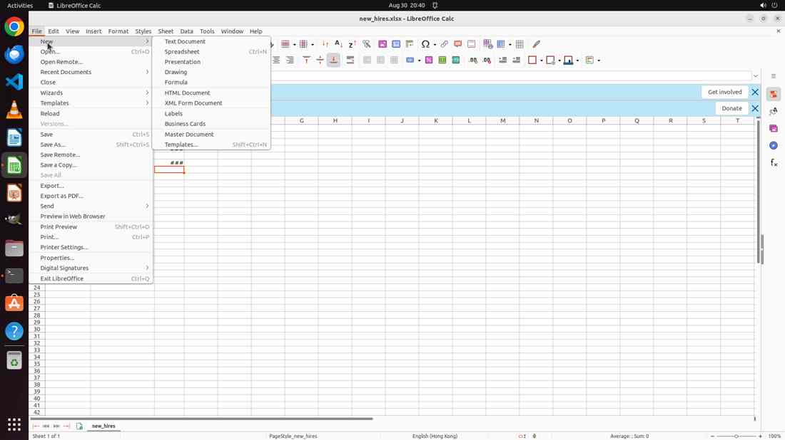
step 18 12:40:54
THINKINGThe submenu shows "Presentation". I'll click it. This may prompt a template dialog; if so I'll choose blank/default. Let me click Presentation and then wait.
EXECUTED (pyautogui in VM)pyautogui.click(440, 150)
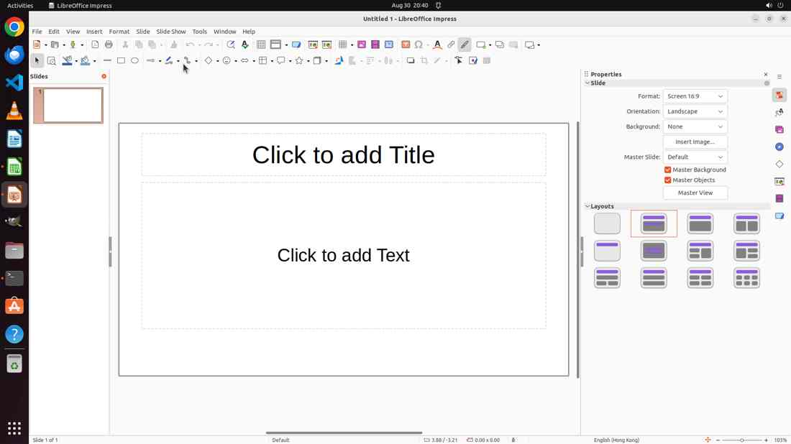
step 19 12:41:05
THINKINGImpress opened with a blank presentation, one slide with Title + Content layout. This is exactly what I need. I'll use the Outline view which is the fastest reliable way to enter all slides: type title, Enter for content, Tab to demote, Shift+Tab to promote to next title.
Actually the Outline view is ideal: I can type all 4 slides' titles and bodies in sequence. Let me switch to View > Outline.
In outline view:
- Type "Marta Oyelaran", Enter → goes to body placeholder (indented). Type body lines. Then Enter creates a new body bullet; press Shift+Tab to promote to next slide title level. Type next title, Enter, body, etc.
Body content: role and start date. I'll put:
Line1: "Learning Partner"
Line2: "Start date: 2024-03-18"
These are two bullet lines in the body. That captures "their role and start date".
Let me switch to Outline view: View menu > Outline.
ACTIONImpress is open with a Title + Content layout. The Outline view is the most reliable way to enter all slides quickly. Let me switch to it via the View menu.
EXECUTED (pyautogui in VM)pyautogui.click(205, 125)
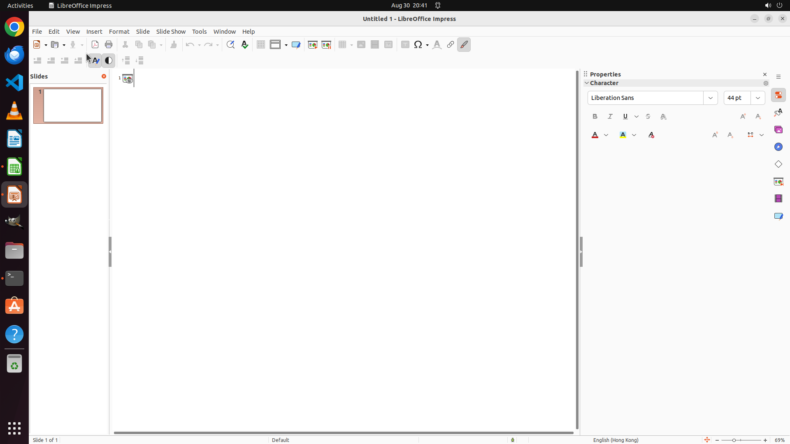
step 21 12:41:38
THINKINGOutline view is active with the cursor in the title line of slide 1. Now I'll type all content using Tab (demote to body) and Shift+Tab (promote to next title).
Sequence starting at title level:
1. Type "Marta Oyelaran"
2. Enter, Tab (demote to body) → type "Learning Partner"
3. Enter → type "Start date: 2024-03-18"
4. Enter, Shift+Tab (promote to title) → type "Ada Nkemelu"
5. Enter, Tab → "HRIS Specialist"
6. Enter → "Start date: 2024-04-01"
7. Enter, Shift+Tab → "Priya Raman"
8. Enter, Tab → "Payroll Analyst"
9. Enter → "Start date: 2024-04-01"
10. Enter, Shift+Tab → "Tomas Belrose"
11. Enter, Tab → "Recruiter"
12. Enter → "Start date: 2024-04-15"
I need to be careful: after typing a title, Enter keeps at title level, so I need Tab to demote. After body lines, Enter stays at body level, so Shift+Tab promotes to title.
Let me batch this. The cursor should be in the title. I'll click into the outline area first to be safe (near the "1" at top). Actually the cursor already appears active (blinking at title line). Let me just type.
I'll do this as one big type with \n for Enter and explicit key presses for Tab/Shift+Tab. But the `type` action types literal text including newlines as Enter. I can't mix Tab key within type reliably. So I must alternate type and key actions. Let me batch them in one tool call as a sequence of actions.
ACTIONOutline view is active with the cursor ready in the title line. Now I'll type all four slides, using Tab to drop into the body and Shift+Tab to return to the title level for the next hire.
TOOL CALL<tool_call>
<function=computer_use>
<parameter=action>
type
</parameter>
<parameter=text>
Marta Oyelaran
</parameter>
</function>
</tool_call>
EXECUTED (pyautogui in VM)pyautogui.typewrite("Marta Oyelaran")
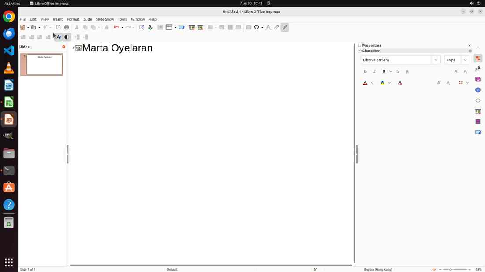
step 22 12:41:54
THINKING"Marta Oyelaran" is entered as the title. Now I'll batch the rest: Enter, Tab, body lines, then Shift+Tab for next title, and so on for all slides. This is a long predictable sequence.
Sequence of actions after current state (title "Marta Oyelaran" typed, cursor at end):
1. key Return (new line, still title level → creates new slide 2 title placeholder? No—actually after title, Return moves to body indent level in outline? In LibreOffice outline, pressing Return after a title creates a new line at the SAME level (title) which becomes the next slide's title. To create body text, I press Return then Tab to demote.)
Correct approach:
- Return, Tab → now at body level (demoted under slide 1). Type "Learning Partner"
- Return, Tab → another body bullet under slide 1. Type "Start date: 2024-03-18"
- Return, Shift+Tab → promote to title level = slide 2. Type "Ada Nkemelu"
- Return, Tab → body. Type "HRIS Specialist"
- Return, Tab → body. Type "Start date: 2024-04-01"
- Return, Shift+Tab → slide 3 title. Type "Priya Raman"
- Return, Tab → "Payroll Analyst"
- Return, Tab → "Start date: 2024-04-01"
- Return, Shift+Tab → slide 4 title. Type "Tomas Belrose"
- Return, Tab → "Recruiter"
- Return, Tab → "Start date: 2024-04-15"
I'll batch all these actions. Note: after typing a body line, the next Return is at body level, so I press Tab to keep it body (same level). Good.
Let me construct the batch.
ACTIONThe first title is in. Now I'll batch the entire remaining sequence: body lines for each hire, demoting with Tab and promoting to the next title with Shift+Tab.
EXECUTED (pyautogui in VM)pyautogui.press("return")
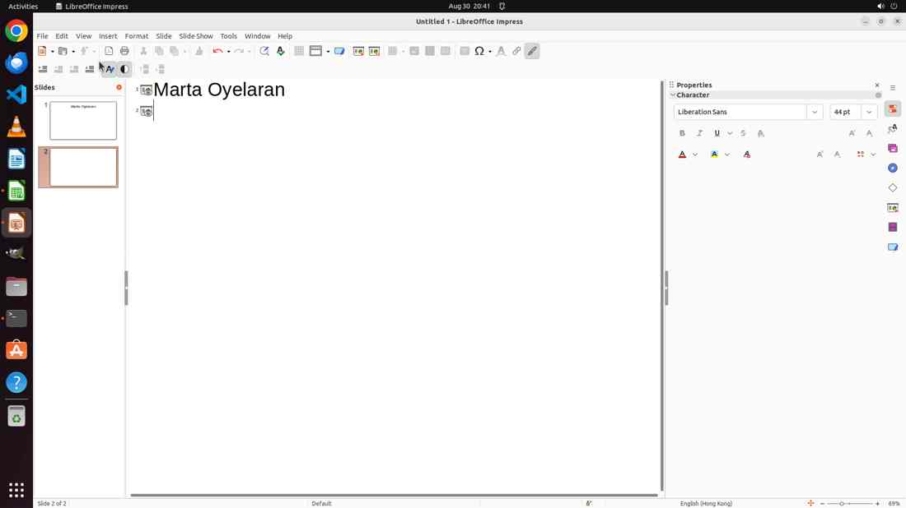
step 23 12:42:06
THINKINGPressing Return created a new slide 2 (title level). Now I press Tab to demote the current empty line into a body bullet under slide 1. That will remove slide 2 and turn this into slide 1's body. Then type body text.
Let me now batch the full remaining sequence confidently:
- Tab → body under slide1; type "Learning Partner"
- Return, Tab → body; type "Start date: 2024-03-18"
- Return, Shift+Tab → slide2 title; type "Ada Nkemelu"
- Return, Tab → "HRIS Specialist"
- Return, Tab → "Start date: 2024-04-01"
- Return, Shift+Tab → slide3 title; type "Priya Raman"
- Return, Tab → "Payroll Analyst"
- Return, Tab → "Start date: 2024-04-01"
- Return, Shift+Tab → slide4 title; type "Tomas Belrose"
- Return, Tab → "Recruiter"
- Return, Tab → "Start date: 2024-04-15"
I'll do this in one batched tool call.
ACTIONReturn created a new title-level line (slide 2). Now I'll demote it with Tab and type all body text plus the remaining titles in one batch.
THINKINGNow there's 1 slide (Slide 1 of 1) and the cursor is at body level (32pt font, indented). Good — Tab demoted it into the body of slide 1. Now I'll batch the whole remaining sequence. The cursor is at a body line. I'll type the body and then continue.
Full remaining batch:
1. type "Learning Partner"
2. Return, Tab → next body line; type "Start date: 2024-03-18"
- Wait: after Return at body level, it stays body level (same indent). Tab would demote further (to a sub-bullet). I do NOT want that. So for a second body line under the same slide, I just press Return (no Tab). It stays at the same body level.
Let me reconsider. At body level, Return → new line at same body level. Good, no Tab needed for consecutive body lines.
Only: Title→first body line needs Tab. Last body line → next title needs Shift+Tab.
So corrected:
1. type "Learning Partner"
2. Return → body line 2; type "Start date: 2024-03-18"
3. Return, Shift+Tab → slide2 title; type "Ada Nkemelu"
4. Return, Tab → body; type "HRIS Specialist"
5. Return → body; type "Start date: 2024-04-01"
6. Return, Shift+Tab → slide3 title; type "Priya Raman"
7. Return, Tab → body; type "Payroll Analyst"
8. Return → body; type "Start date: 2024-04-01"
9. Return, Shift+Tab → slide4 title; type "Tomas Belrose"
10. Return, Tab → body; type "Recruiter"
11. Return → body; type "Start date: 2024-04-15"
Now I'm at body level already, so step 1 just types. Let me batch everything.
ACTIONNow I'm at the body level of slide 1. I'll type the full remaining content in one batch: consecutive body lines use Return, first body line of each new slide uses Tab, and moving to the next title uses Shift+Tab.
EXECUTED (pyautogui in VM)pyautogui.typewrite("Learning Partner")
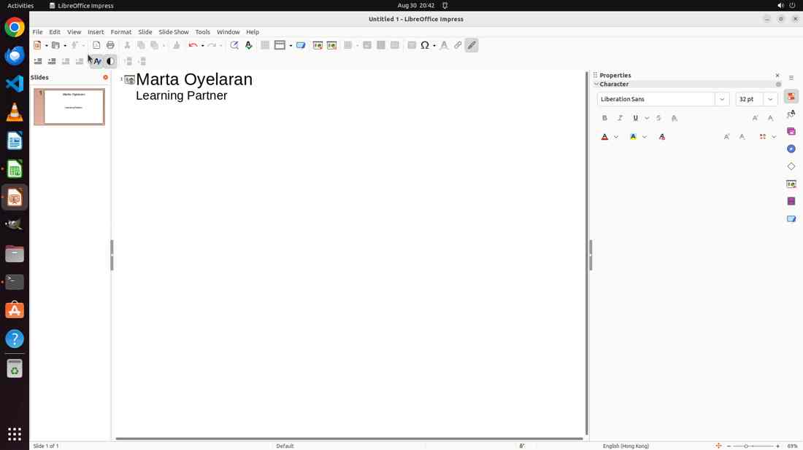
step 25 12:42:40
THINKING"Learning Partner" is now a body line under slide 1. Now I'm confident in the behavior. Let me batch the rest of the sequence in a single tool call:
- Return → body line 2
- type "Start date: 2024-03-18"
- Return, Shift+Tab → slide 2 title
- type "Ada Nkemelu"
- Return, Tab → body
- type "HRIS Specialist"
- Return → body
- type "Start date: 2024-04-01"
- Return, Shift+Tab → slide 3 title
- type "Priya Raman"
- Return, Tab → body
- type "Payroll Analyst"
- Return → body
- type "Start date: 2024-04-01"
- Return, Shift+Tab → slide 4 title
- type "Tomas Belrose"
- Return, Tab → body
- type "Recruiter"
- Return → body
- type "Start date: 2024-04-15"
I'll issue these as one batched actions list.
ACTIONBody text is working correctly. Now I'll enter the remaining three hires in one batched sequence.
EXECUTED (pyautogui in VM)pyautogui.press("return")
step 26 12:42:52
THINKINGGood, now at a new body line at same indent. I'll type the start date and then continue the whole rest of the deck in a single batched call. Confident now.
ACTIONNow I'll type the start date for slide 1 and continue through all remaining slides in one batch.
EXECUTED (pyautogui in VM)pyautogui.typewrite("Start date: 2024-03-18")
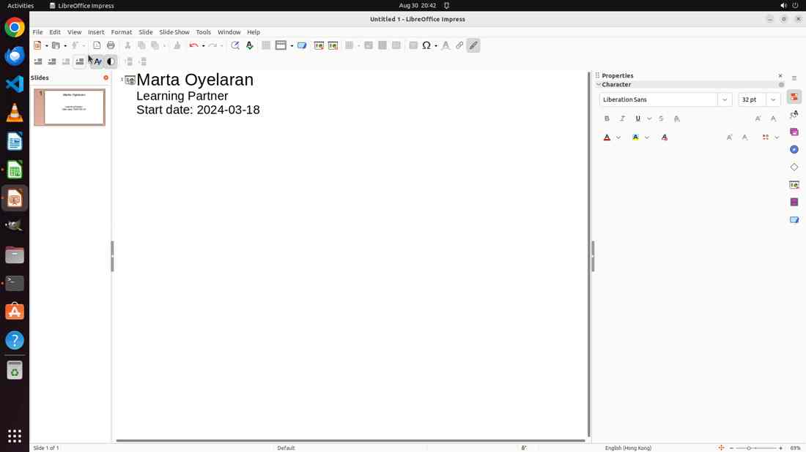
step 27 12:43:06
THINKINGSlide 1 is complete: title "Marta Oyelaran", body "Learning Partner" and "Start date: 2024-03-18". Now I'll do the remaining 3 slides in one big batch. The cursor is at the end of the last body line of slide 1.
Batch:
- Return, Shift+Tab → slide 2 title; type "Ada Nkemelu"
- Return, Tab → body; type "HRIS Specialist"
- Return → body; type "Start date: 2024-04-01"
- Return, Shift+Tab → slide 3 title; type "Priya Raman"
- Return, Tab → body; type "Payroll Analyst"
- Return → body; type "Start date: 2024-04-01"
- Return, Shift+Tab → slide 4 title; type "Tomas Belrose"
- Return, Tab → body; type "Recruiter"
- Return → body; type "Start date: 2024-04-15"
I'll batch all these actions in one tool call.
ACTIONSlide 1 is complete. Now I'll enter slides 2, 3, and 4 all in one batched sequence.
EXECUTED (pyautogui in VM)pyautogui.press("return")
step 28 12:43:16
THINKINGNow I'm on a new body line at body level (still slide 1). I need Shift+Tab to promote to a new title (slide 2). Let me batch the whole remaining sequence now in one call. I'm confident in the mechanics.
EXECUTED (pyautogui in VM)pyautogui.press("return")
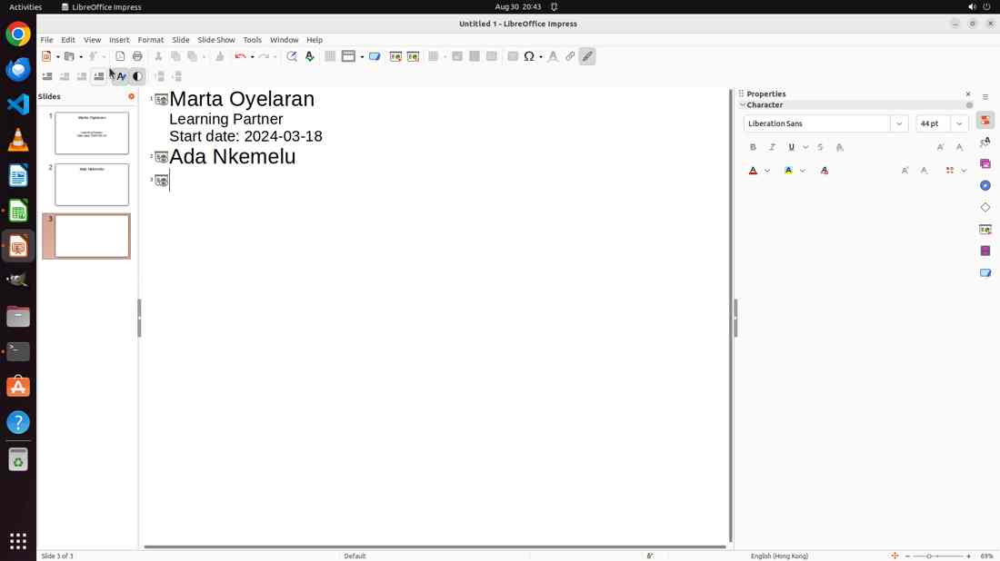
step 31 12:43:54
THINKINGPressing Return after a title created slide 3 at title level (3 of 3). I need to press Tab to demote this line into slide 2's body. Let me do that, then type the body, and continue. I'll batch: Tab, type "HRIS Specialist", Return, type "Start date: 2024-04-01", Return+Shift+Tab, type "Priya Raman", Return+Tab, type "Payroll Analyst", Return, type "Start date: 2024-04-01", Return+Shift+Tab, type "Tomas Belrose", Return+Tab, type "Recruiter", Return, type "Start date: 2024-04-15".
ACTIONThe Return created slide 3's title level. I'll press Tab to demote into slide 2's body, then batch the rest.
THINKINGNow at slide 2 body level (32pt, bullet showing, 2 of 2 slides). Now I'll type the rest. I'll do it as a sequence of type/key actions in separate calls but batched where possible. Since `type` can't include Tab/Shift+Tab, I must alternate. Let me do the next type "HRIS Specialist", then handle newlines.
Actually I realize I should just proceed step by step but efficiently. Let me type "HRIS Specialist" now.
EXECUTED (pyautogui in VM)pyautogui.typewrite("HRIS Specialist")
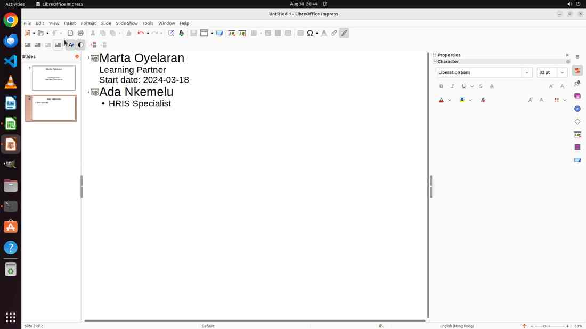
step 33 12:44:11
THINKINGGood. "HRIS Specialist" is a bullet under slide 2. Now:
- Return → new body line
- type "Start date: 2024-04-01"
Then slide 3. Let me do Return then type.
EXECUTED (pyautogui in VM)pyautogui.typewrite("Priya Raman")
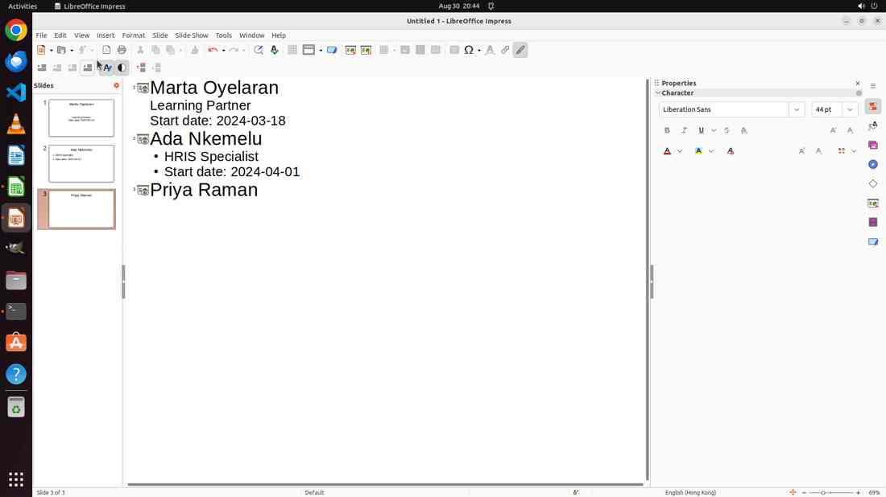
step 38 12:44:56
THINKINGSlide 3 title "Priya Raman" entered. Now Return, Tab → body, type "Payroll Analyst", Return → "Start date: 2024-04-01", Return, Shift+Tab → slide 4 title, type "Tomas Belrose", Return, Tab → body, type "Recruiter", Return → "Start date: 2024-04-15".
Let me do Return then Tab.
ACTIONSlide 3 title is in. Now Return then Tab to enter its body.
EXECUTED (pyautogui in VM)pyautogui.typewrite("Payroll Analyst")
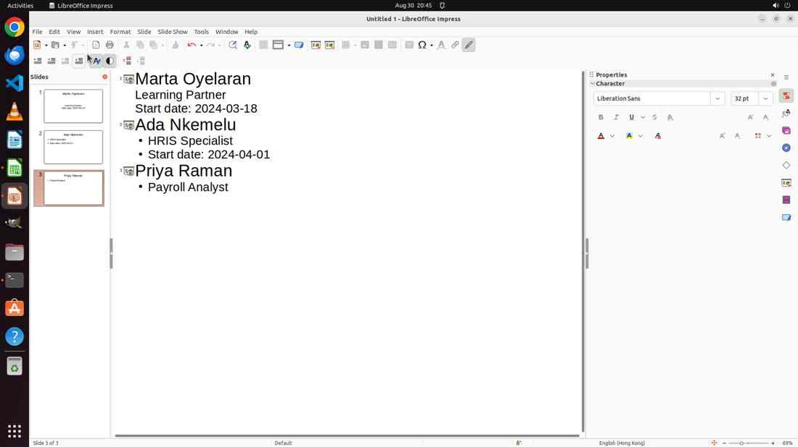
step 41 12:45:22
THINKING"Payroll Analyst" is the body. Now Return → new body line, type "Start date: 2024-04-01". Then Return, Shift+Tab → slide 4 title, type "Tomas Belrose", Return, Tab → body, type "Recruiter", Return → "Start date: 2024-04-15".
EXECUTED (pyautogui in VM)pyautogui.press("return")
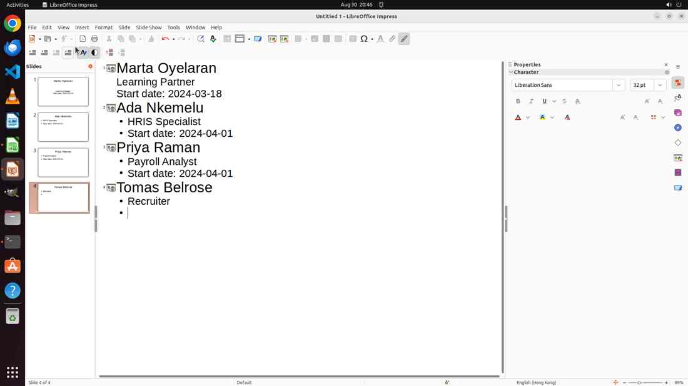
step 50 12:46:54
THINKINGStill 4 slides, new body bullet. Type the final start date "Start date: 2024-04-15". Then all content is complete. I must be careful NOT to press Return after this, or it would create a 5th slide.